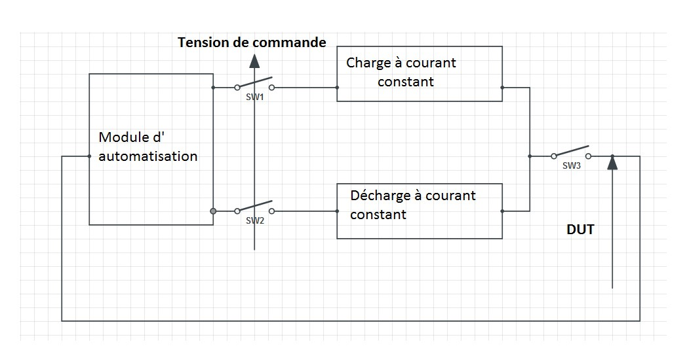
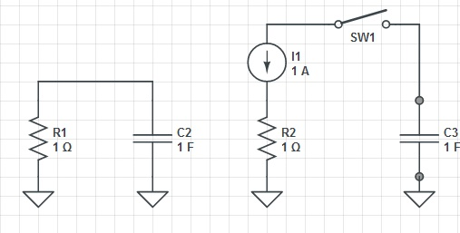
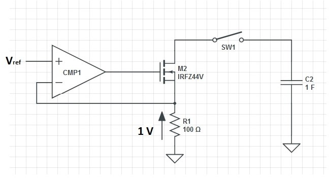

Contexte technologique
L’objectif du projet a été de concevoir un circuit électronique. Ce circuit permet d’amener un élément de stockage d’énergie (supercondensateur, batterie d’accumulateur Pb, NiCd, NiMH, Lithium) d’un état énergétique quelconque à un état de charge cible grâce à une charge ou une décharge lente. Le fonctionnement sera automatique et tiendra compte en particulier de la puissance limite dissipable par le transistor assurant la fonction de décharge. Pour cela, une des spécifications initiale était la décharge à courant constant réglable.
Analyse fonctionnelle

• Pour réaliser notre circuit, on a supposé qu'on maîtrise le stockage d'énergie à partir de la tension. La charge sera maîtrisée donc par la donnée de la tension, ce qui est justifiée par la relation linéaire qui lie la charge d'une capacité à la tension à ses bornes.
• Pour imposer la tension nécessaire, on utilise un potentiomètre.
• L’utilisation de l’étage push-pull sera particulière. Ici, on ne considère pas deux état (charge ou décharge). Pour assurer la protection des composants dissipant assez de chaleur, il est nécessaire de prévoir une fonction sécurité (les deux interrupteurs ouverts) dans le cas où on achève l’opération.
• La décharge à courant constant : Nous devons être en mesure d’assurer la décharge du DUT (device under test) jusqu’à ce qu’on arrive à la tension de la consigne. Pour les simulations et l’étude de ce projet nous avons considéré une capacité donnée (comme DUT).
• La charge à courant constant : Nous devons être en mesure d’assurer la charge du DUT jusqu’à ce qu’on arrive à la tension de la consigne.
• L'interrupteur(Switch) SW3 : Il permet d'assurer la protection de l'accumulateur à utiliser. Il pourrait soit s'agir d'un vrai interrupteur commandé en tension ou d'une propriété du circuit permettant d'avoir un courant nul lorsque l'opération (de charge ou décharge) s'arrê†e.
• Les interrupteurs SW2 et SW4 commandés en tension. Permettant d’avoir accès, soit à la charge, soit la décharge.
• Enfin un module d'automatisation est nécessaire.
Décharge à courant constant
Pour valider le circuit de décharge, nous tenterons de décharger une capacité ayant une tension initiale de 12V.
Dans notre cas, on souhaite décharger notre capacité à courant constant (soit 1A par exemple). L'interrupteur sert à isoler le circuit de décharge du DUT lorsque la décharge/la charge est terminée ou lorsque le DUT est en charge. Il nous a ainsi fallu une source de courant constant, sensible à la tension présente à la sortie du module d'automatisation qui est sensée piloter l'etage push-pull. D'autre part, avoir un courant qui s'annule après la décharge serait souhaitable. Pour satisfaire ces conditions, nous utilisons un MOSFET canal N qui se comporte comme une source de courant commandée en tension tant qu’on se trouve en zone saturée. Nous avons utilisé le IRFZ44V qui est une bonne source de courant pour une tension VDS supérieur à 1V.
JUSTE POUR TESTER
